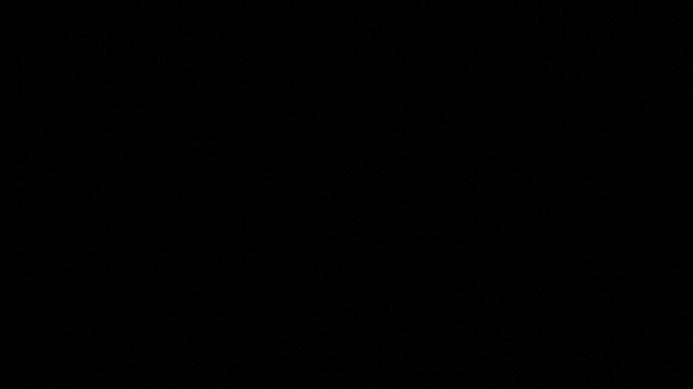

Collaborators A. Cupisti, E. Galli, B. Giugni, E. Rosotti, M. La Macchia
Year 2023

This speculative project explores the relationship between humans and nature in the context
of climate change, but with a twist: it introduces non-human perspectives through the lens of
the BCTR corporation. It's a scientific organization with a high level of secrecy that operates in
order to reveal the true power of the bacterial species, claiming its superiority over other life
forms. At the forefront of their discoveries is Maya, an interactive electronic device designed
to explore and communicate the findings of BCTR. The pinnacle of discoveries conducted by
the organization is Maya, whose task is to reveal the species truly fitted for the continuation of
life on planet Earth, revealing a disturbing new reality.
Users can interact with his interactive
electronic device, prototyped using Arduino hardware and 3D printing. This project, serving also
as the subject of my bachelor thesis, delves into themes of environmentalism, scientific ethics,
and the complex dynamics between humans and the natural world. Through Maya and the
narrative surrounding BCTR, my group and I, explored provocative questions about the future of
life on Earth and our role within it. Aggiungere Anthropogenic Narratives